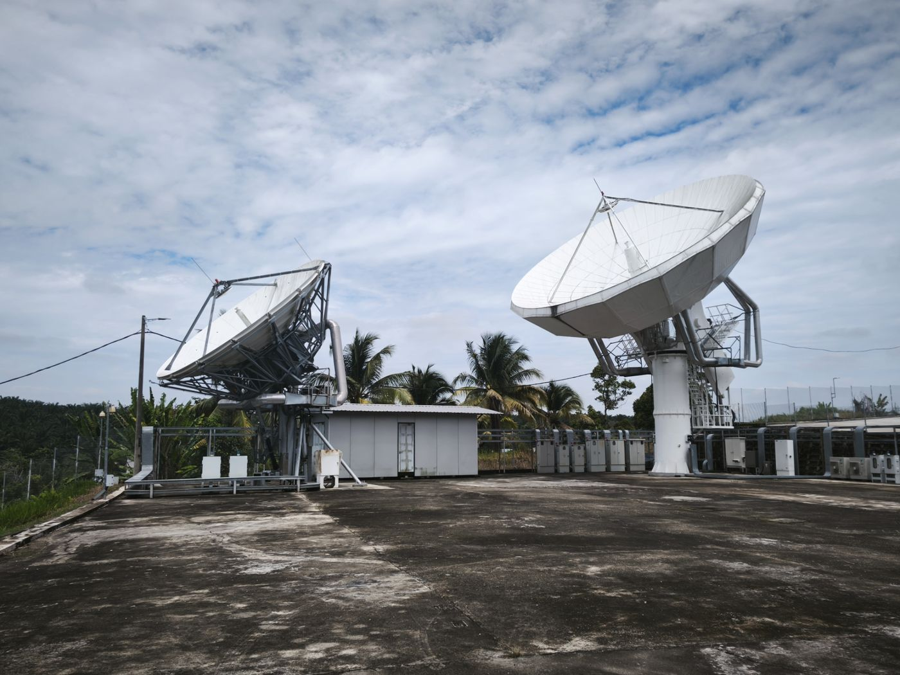

RANTAU, NEGERI SEMBILAN — Satcom Gateway Services Sdn Bhd (SGS) has extended the capability of its carrier-neutral teleport to support gateway operations for the SPACESAIL low-earth-orbit constellation, adding a low-latency layer to a site that has until now served geostationary traffic.
The addition means customers can reach both orbital regimes through a single Malaysian landing point. Traffic from the APStar geostationary fleet and from SPACESAIL now terminates in the same data hall, on the same fibre, under the same operational team — removing the second site, second contract and second integration effort that a hybrid architecture would normally require.
Why hybrid architectures matter
Geostationary and low-earth-orbit networks solve different problems. GEO delivers broad, predictable regional coverage from a fixed orbital slot. LEO delivers latency low enough for interactive applications, at the cost of a constellation that must be tracked continuously.
Satellite networks require more than bandwidth. They require dependable ground infrastructure, operational expertise and the ability to respond to the technical demands of mission-critical communications.
Running both from one teleport lets an operator fail traffic between them. Where a maritime or offshore customer previously accepted a degraded link during rain fade or a constellation gap, a hybrid router can hold the session on the other network.
What is available now
- Gateway hosting for the SPACESAIL LEO constellation alongside APStar-5C, APStar-6D and APStar-9
- Hybrid GEO–LEO router solutions with antenna options for enterprise, maritime and remote operations
- Low-cost LEO IoT terminals for sensors, remote monitoring and emergency communications
- Managed bandwidth packages that can span both networks under one commercial agreement
Ground infrastructure behind the service
The Rantau site sits 68 km from Kuala Lumpur International Airport and 80 km from the metropolitan area — far enough for a clean RF environment, close enough for engineering access. It is linked to the TSGI ground station (KL1) by 65 km of dark fibre operating in full redundancy, with Telekom Malaysia and Fiberail both present on site.
Supporting infrastructure includes a Tier III-class data hall, redundant utility, generator and battery power, dedicated telco and server rooms, and continuous monitoring. Console Connect from PCCW Global is currently under evaluation to extend multi-platform connectivity to destinations worldwide.
For gateway hosting, capacity or colocation enquiries, contact the SGS team at info@satcomgs.com or +60 6-694 4990.